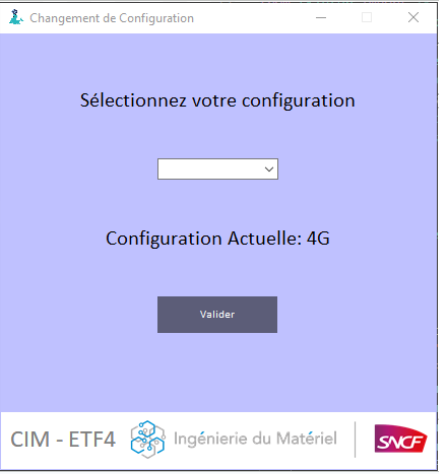
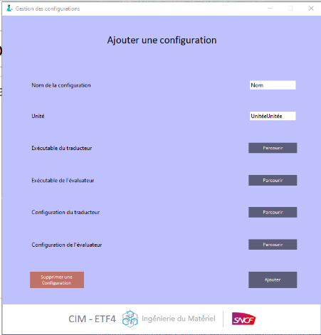
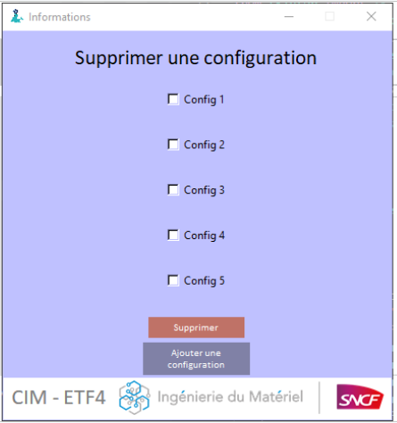
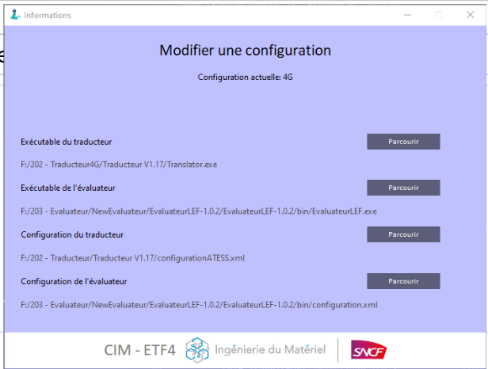
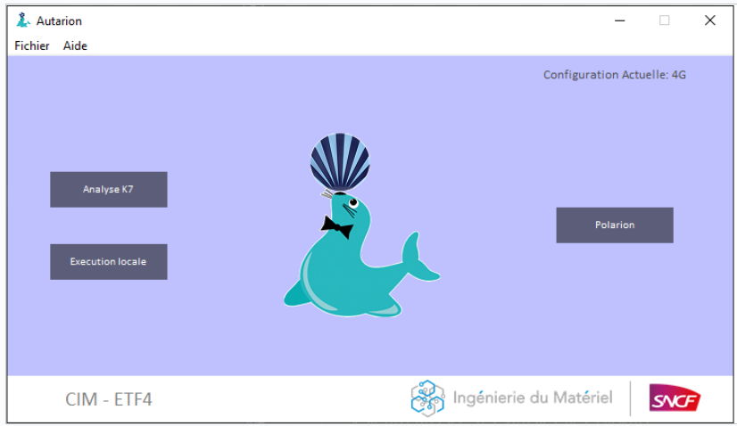

Ma deuxième mission était un peu plus technique, Un deuxième banc de test est arrivé dans l'entreprise par conséquent
li fallait modifier l'application car le chemin vers le banc de test était écris directement en dur dans le code l'objectf était donc de modifier l'application afin de pouvoir changer de banc de test sans avoir à changer le code, donc changer de banc de test directement via l'application
on apellera donc une 'configuration' un banc avec tout les chemins vers des composant nécéssaire pour le fonctionnement.
Cette mission a été faite en collaboration avec mon tuteur, j'étais personellement chargé de modifier le front, c'est a dire la partie visible de l'application avec donc un système de TopLevel, une TopLevel est une fenetre supplémentaire reliée à l'application.
J'ai donc commencé par une TopLevel pour changer de configuration, dans le service ou l'on es il y en a deux 3G ou 4G, les TopLevels sont accessibles via la barre du haut du menu. Voici donc le premier résultat:

Il y a eu une grosse difficulté sur l'affichage du label de la configuration actuelle car ce fut difficile de l'actualiser comme nous le souhaitions.
Ensuite il fallait pouvoir ajouter une configuration au cas où d'autres banc arriveraient dans le futur ou que l'on souhaite exporter l'application dans un autre service de l'entreprise.
Voici donc ce que j'ai fais:

Mon tuteur lui s'occupait de tout relier à une BDD
J'ai donc ensuite fait une top level pour supprimer une configuration

Puis aussi une pour Modifier une configuration si besoin

Et pour finir un ajout de la configuration actuelle sur la page principale pour ne pas a avoir a chercher sur quelle configuration on est:
